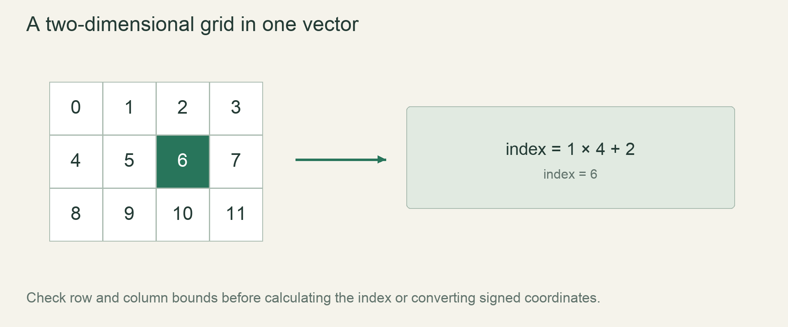

M0 / FoundationLesson 18 of 100 · ~5 min reading + build time
Turn coordinates into safe indices
Convert signed cell coordinates into an Option index, rejecting invalid positions before casting.
Previously: Allocate a small world with Vec. Keep that working result available before starting this lesson.
Why we need this now
Brushes and camera motion can produce coordinates outside the stored rectangle. A direct index formula is valid only inside its domain. We will derive both the row-major mapping and the validation order, so an edge click becomes an ordinary missing cell instead of a panic or unintended edit.
Your result: Convert signed cell coordinates into an Option index, rejecting invalid positions before casting.

01Flatten one row at a time
In an eight-wide grid, row0 occupies indices0–7, row1 occupies8–15, and row2 occupies16–23. Each complete row skips width slots. Therefore the index is row*width+column. The width, not height, is the stride because adjacent columns are stored consecutively.
This derivation lets you reconstruct the formula instead of memorizing it. For a32×18 grid, the final valid coordinate31,17 maps to17*32+31=575, and the vector has576 elements. The final index is one less than the count because indexing begins at zero.
02Validate the signed inputs first
A valid column is at least0 and less than width; a valid row is at least0 and less than height. Test all four conditions while coordinates are still signed. A negative coordinate is not a valid usize, and casting it first does not preserve its intended meaning.
The helper returns None for positions outside the rectangle. For valid positions it returns Some(index). This signature makes absence explicit. It does not promise that every caller coordinate can be used. A later lesson will match these two alternatives instead of unwrapping blindly.
03Keep arithmetic assumptions in the contract
The focused helper uses positive i32 dimensions and small fixtures. Production world constructors should validate dimensions and checked multiplication before allocation so width*height cannot overflow. The example converts each nonnegative component to usize before computing the flat index.
Do not silently claim a helper is universally safe merely because it contains one bounds check. Its safety depends on the dimensions, allocation and coordinate representation agreeing. Store dimensions in one validated World and ensure cells.len()==width*height at construction; otherwise a geometrically valid coordinate could still address a mismatched buffer.
04Test corners and the first invalid positions
Check0,0;31,0;0,17;31,17, then -1,0;32,0;0,-1;0,18. These cases reveal sign errors, off-by-one boundaries and a mistaken stride. A center-cell test alone would miss most of those failures.
Use the same helper for drawing queries, movement and painting where the storage rectangle applies. That centralizes the domain decision. For an infinite chunked world, the mapping will first select a chunk and then validate or derive local coordinates; this bounded helper remains useful within each buffer.
Read → predict → run → change
Walk through the working example
Complete focused example — src/main.rs
Download this worked example ↧
fn index(column: i32, row: i32, width: i32, height: i32) -> Option<usize> {
if width <= 0 || height <= 0 || column < 0 || row < 0
|| column >= width || row >= height { return None; }
Some(row as usize * width as usize + column as usize)
}
fn main() {
assert_eq!(index(0, 0, 32, 18), Some(0));
assert_eq!(index(31, 17, 32, 18), Some(575));
for (x,y) in [(-1,0),(32,0),(0,-1),(0,18)] {
assert_eq!(index(x,y,32,18), None);
}
println!("bounds and stride checks passed");
}Read what each part does
- The helper represents a bounded rectangle, not the entire procedural world.
- None is a meaningful outcome, not an error sentinel index.
- All corners and immediate outside edges are tested.
Expected result
bounds and stride checks passedExact version numbers, paths and compiler wording may differ. Compare the behavior and file locations, not incidental output formatting.
Try the idea here
This is a bounded teaching model in your browser, not your Rust game and not a real terminal. It never executes shell commands or modifies project files.
Prediction · repair · transfer
Exercises you actually do
Write a prediction or make an attempt before opening a solution. Use the hint if stuck; then compare reasoning and verify with the stated check. A different implementation is fine when it satisfies the same contract.
Derive a new stride
Find the index for column3,row2 in a10-wide grid.
Need a hint?
Skip two full rows, then move three positions.
Worked solution
The result is2*10+3=23. The height determines whether row2 exists, but it is not the stride in row-major storage.
How to verify your result
You explain23 from complete rows rather than reciting a formula.
Catch a boundary bug
Replace column>=width with column>width and test column==width.
Need a hint?
The first coordinate beyond a row is not valid.
Worked solution
The broken helper accepts the next row’s first slot or a final out-of-bounds position. Restore >=. The equality test is the important counterexample.
How to verify your result
The exact-width input returns None.
Join mapping to allocation
Assert that a valid helper result is below cells.len() in a fixture.
Need a hint?
Dimensions and actual storage must agree.
Worked solution
Construct a vector of exactly width*height validated elements and test every coordinate in that small fixture. If a dimension-only mapping exceeds its length, the constructor contract is broken.
How to verify your result
Every valid fixture coordinate maps within storage and every invalid edge returns None.
When it goes wrong
Start with the observed symptom. Change one assumption at a time instead of pasting fixes until the error disappears.
A left-edge erase edits a distant cell
What is happening: Negative coordinates were cast before validation.
Try this: Reject signed negative inputs before converting to usize.
Columns wrap into the next row
What is happening: column==width was allowed.
Try this: Use an exclusive upper bound.
A valid mapped index still panics
What is happening: The vector length does not match the dimensions.
Try this: Validate allocation and dimension invariants in the constructor.
Explain it without the example
Why must negative coordinates be rejected before conversion to usize?
Reasoning to compare
An unsigned index cannot represent a negative grid coordinate as intended. Validation before conversion prevents a negative input becoming a huge invalid index.
Self-check only: test a prediction or ask your tutor if anything still feels arbitrary.
For your YouTube series
Turn the lesson into an episode
Open with the problem or result
Brushes and camera motion can produce coordinates outside the stored rectangle. A direct index formula is valid only inside its domain. We will derive both the row-major mapping and the validation order, so an edge click becomes an ordinary missing cell instead of a panic or unintended edit.
Teach in this order
- Flatten one row at a time
- Validate the signed inputs first
- Keep arithmetic assumptions in the contract
- Test corners and the first invalid positions
Record this demonstration
Convert signed cell coordinates into an Option index, rejecting invalid positions before casting.
Close with what the viewer can now explain
Explain the result without reading the code, make one predicted change, then show the observed result.
A lesson can span several recordings. The episode beats are a teaching outline, not a claim that every viewer learns at the same speed.
Finish with evidence
A 32 by 18 grid maps its final valid cell to index 575. Invalid positions return None without panic.
Make one small variation without copying: predict it, run it and explain any difference. On another day, repeat one exercise from memory before starting the next lesson. Ask your tutor about any step you can execute but cannot explain.
This is an attempt marker, not a grade. Learning records are written only after demonstrated understanding.
Primary sources for this lesson
Use sources to verify the mechanism. The lesson itself supplies the instructions; the links are not a substitute for teaching them.